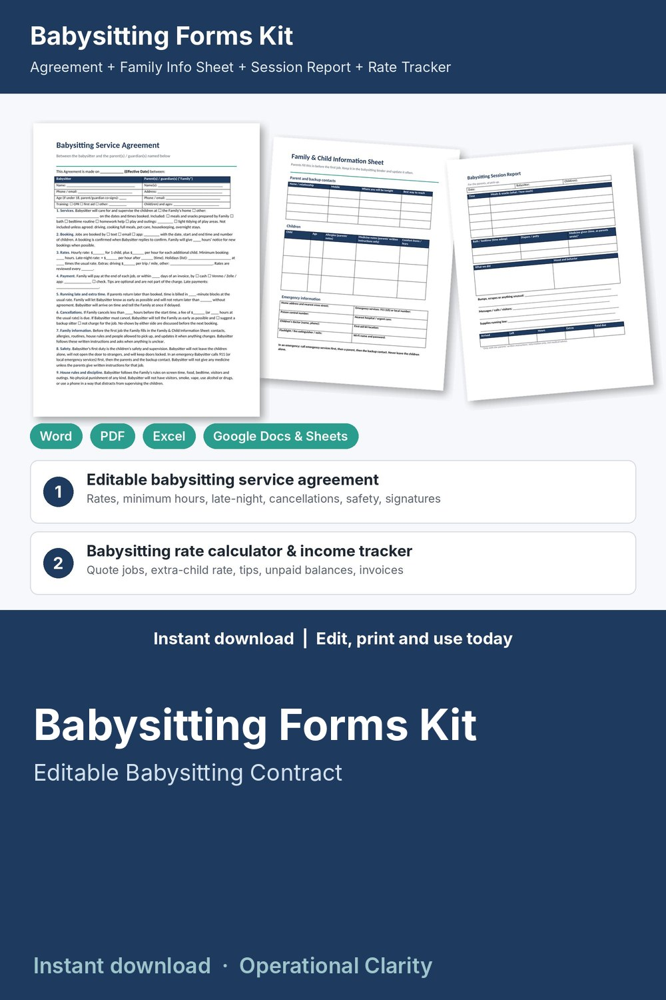

Babysitting Forms Kit

Babysit like a pro: an editable babysitting agreement, family info sheet, job checklist and a working rate calculator and income tracker that prices every job for you.
WHAT'S INSIDE
- Babysitting Service Agreement (Word + PDF): 14 plain-English sections, 2 pages. Services included and not included, how jobs are booked, hourly rate with an extra-child rate, minimum booking, late-night and holiday rates, payment and tips, parents running late, cancellations and the late-cancel fee, family information, safety and emergencies, house rules and discipline (no physical punishment), driving and outings, privacy and photos, independent sitter, ending the agreement, signatures (with a line for the sitter's parent if the sitter is under 18).
- Family & Child Information Sheet (Word + PDF): parent and backup contacts, where the parents will be, each child's allergy and comfort notes, medicine notes in the parents' own words, emergency information, tonight's routine, house rules, who may pick up the children.
- Babysitting Job Checklist & Session Report (Word + PDF): what to ask before the parents leave, what to do while you are there and before you go; a report for the parents at pick-up (meals, bath and bedtime, what you did, mood, anything unusual, hours and total due).
- Babysitting Invoice, Receipts & Rate Card (Word + PDF): a 10-line invoice, four tear-off receipts and a rate card you fill in once and show every new family.
- Babysitting Rate Calculator & Income Tracker (Excel / Google Sheets, 8 tabs):
* Quote: type the start, end, number of children and holiday; see hours, billable hours, late-night hours, your rate and the total to quote, plus a weekly income goal (how many jobs you need)
* Families: every family's jobs, hours, billed, tips, paid and balance
* Jobs: one row per job; minimum hours, extra-child rate, late-night premium, holiday multiplier, extras, late-cancel fee, tips and payments; status (PAID / PART PAID / DUE / OVERDUE / UPCOMING)
* Invoice: pick a family and a month and the printable invoice fills itself in
* Dashboard: earned to date, tips, collected, unpaid balance, hours, your real hourly rate including tips, upcoming bookings, by-family and by-month totals with a chart
- START HERE guide (PDF)
HOW IT WORKS
1. Set your rates on the Settings tab: rate for 1 child, extra child, late-night premium, holiday multiplier, minimum hours, late-cancel fee, payment terms.
2. Fill in the Service Agreement and Rate Card with the same numbers and sign one with each family.
3. Ask each family to fill in the Family & Child Information Sheet before the first job.
4. Quote each job on the Quote tab, use the Job Checklist at arrival and hand over the Session Report at pick-up.
5. Log the job, mark the payment, send the monthly invoice and watch the dashboard.
Example data (4 families, 22 jobs) shows how it all connects; delete it and type your own. Yellow cells = type here, green cells = calculated.
IMPORTANT
The rates in the example are examples only: set your own, they differ a lot by city, experience and number of children. The spreadsheet tracks income and does not calculate any taxes; ask a tax professional what applies to you. The information sheet and session report are information only, not a medical screening tool and not medical advice, and are not official medical consent or medication authorization forms: give medicine only with the parents' written instructions.
FORMATS
- Word .docx (edit in Microsoft Word, Google Docs, Pages or LibreOffice) + PDF, US Letter
- Excel .xlsx (works in Excel and Google Sheets)
This is an instant digital download, no physical item will be shipped.
Editable template, not legal, tax or medical advice. Rules for sitters and household workers differ by state and city; have it reviewed by a local attorney before you use it. The child information sheet and session report are information only, not a medical screening tool.